Portable Polarization
Partisan Differences in COVID-19 Health Behaviors
Chris Soria
2026-04-22
The Partisan Mortality Divide
Republican-leaning counties initially had lower mortality; by fall 2020 the pattern reversed and persisted through the end of the pandemic.
From Counties to Individuals
The ecological pattern raises an individual-level question:
Do Republicans and Democrats actually behave differently in ways that could produce differential mortality?
- County-level correlations can’t tell us whether individuals differ
- Sorting, urbanicity, and demographics could explain away aggregate gaps
- We need behavioral data on individuals, not county-level proxies
Theory & Data
Why would partisanship shape health behavior — and what would prove it does?
A. Partisanship and Health: Not a COVID Invention
- 2009 H1N1 (“swine flu”): Republican-leaning states had significantly lower uptake of the H1N1 vaccine — driven largely by partisan media self-selection and differential trust in public health authorities (Baum 2011)
- Vaccine attitudes: Political ideology and party ID have been consistent predictors of vaccine hesitancy well before COVID, tied to differential trust in science and government (Baumgaertner et al. 2018; Gauchat 2025)
- The pattern is not new — COVID accelerated and made visible a long-standing structure
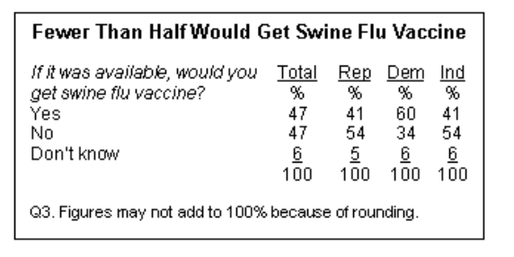
Source: Pew Research Center, 2009
B. The Partisan Gap in Public Health Perception Has Grown
- Trust in the CDC, FDA, and public health authorities has diverged sharply along partisan lines over the past two decades
- Early in COVID (March–April 2020), partisan perception gaps in threat severity were already large — and grew rapidly (Gadarian et al. 2021)
- By fall 2020, Democrats and Republicans were living in essentially different information realities about the severity of the pandemic
- COVID didn’t create the divide — it widened it
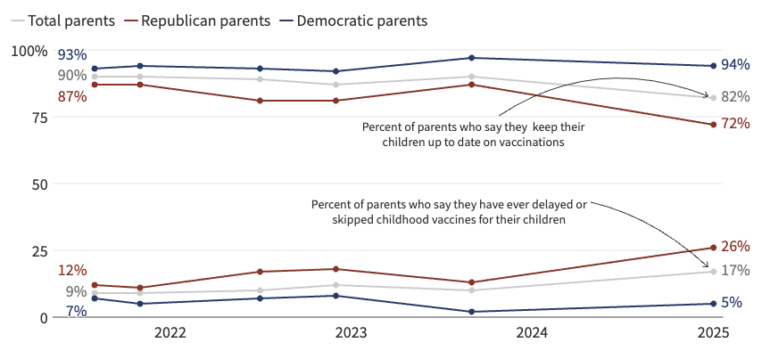
Source: KFF Tracking Poll on Health Information and Trust, 2025
C. Documented Behavioral Differences During COVID
A wide range of studies document partisan gaps in COVID protective behavior:
- Social distancing & mobility: Republicans reduced mobility less than Democrats in the early pandemic (Allcott et al. 2020; Gollwitzer et al. 2020)
- Mask wearing: Large partisan gaps in self-reported and observed masking (Grossman et al. 2020)
- Vaccination: Republican partisans vaccinated at lower rates; Trump support specifically predicts hesitancy (Gadarian et al. 2024)
- Mortality consequences: Republican-leaning counties had higher COVID death rates, widening after vaccine availability (Wallace et al. 2023)
D. Partisanship as Social Identity
Identity theory predicts:
- Group membership → in-group conformity
- Boundary maintenance → symbolic differentiation
- Durable dispositions (habitus) → behavioral regularities
The key question isn’t whether gaps exist — it’s why they persist.
If partisanship functions as a fundamental social identity (like race or religion), behavioral gaps should survive:
- Different policy environments
- Different geographic contexts
- Demographic controls
- Even controlling for stated risk perceptions
Competing Explanations & Testable Predictions
| Explanation | If true, gaps should… |
|---|---|
| 1. Demographic sorting | Disappear after controlling age, race, education, metro |
| 2. Policy environment | Disappear within the same mandate regime |
| 3. Geographic / contextual factors | Disappear within the same region or urban/rural setting |
| 4. Local partisan context | Be smaller when living in an opposing-party area |
| 5. Risk perception | Disappear after controlling for stated concern |
| 6. Severity override | Narrow during high-mortality periods |
| 7. Identity dominates | Persist across all of the above ← our hypothesis |
Data: Berkeley Interpersonal Contact Study (BICS)
Design:
- 6 survey waves: April 2020 — May 2021
- N = 18,233 respondents
- Nationally representative (weighted)
- Raked weights: match Gallup 2020 party targets
Partisan composition (weighted):
- Democrats: 31% (n = 8,189)
- Independents: 40% (n = 4,527)
- Republicans: 30% (n = 5,517)
Key measures:
- Contacts: Face-to-face contacts the day prior
- Masks: % of contacts with mask worn
- Perceived severity: “How concerned are you about COVID-19?” (4 levels)
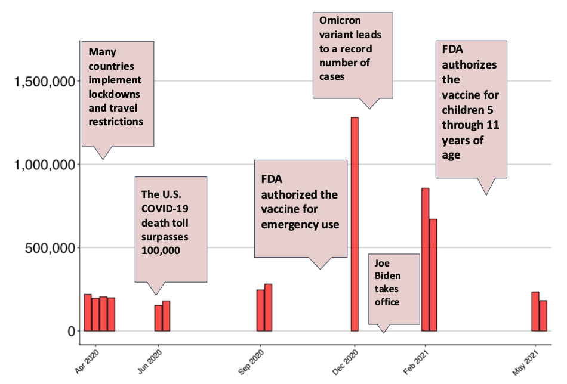
Linked Data Sources
Individual-level survey
- BICS — 6 waves, April 2020–May 2021; contacts, masks, vaccination, perceived severity, demographics
County-level COVID outcomes
- JHU CSSE — county-level confirmed cases (lagged weekly incidence) and deaths (lagged weekly mortality)
- U.S. Census Bureau — county population denominators for rate calculation
Geographic & policy covariates
- USDA ERS Rural-Urban Continuum Codes (2013) — county metro/non-metro classification
- Wright et al. (2020) — “Tracking Mask Mandates During the Covid-19 Pandemic” (austinlwright.com/covid-research); county-level mandate timing classified as strict / less strict / none
- MIT Election Lab / FEC 2020 — 2020 U.S. House vote share by congressional district (local partisan context)
Core Findings
Substantial, consistent partisan gaps — surviving demographics, time, and context.
Partisan Gaps Across All Three Behaviors
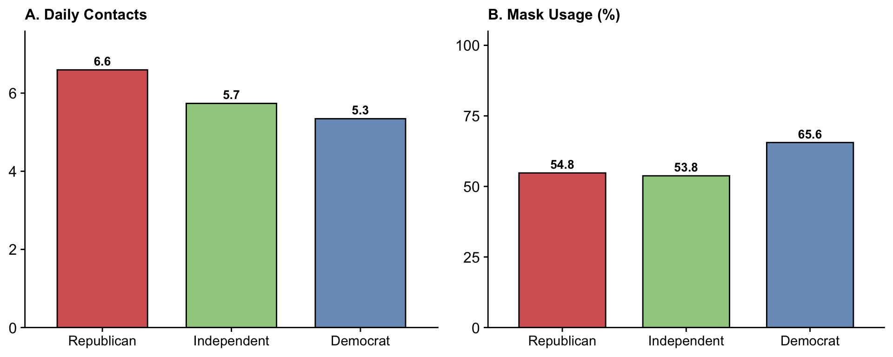
How Large Is the Mask Gap?
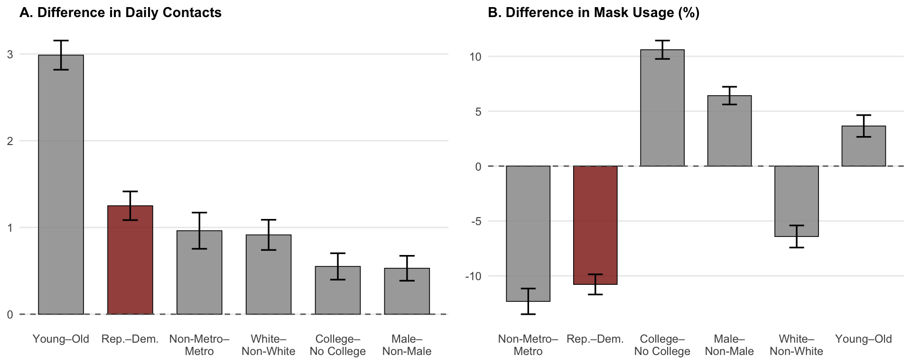
But These Groups Really Do Differ Demographically
Democrat | Independent | Republican | |
|---|---|---|---|
N | 8,189 | 4,527 | 5,517 |
Mean age (years) | 46.3 | 46.4 | 50.0 |
Male (%) | 46.3 | 50.1 | 51.5 |
White (%) | 69.7 | 78.4 | 89.6 |
College graduate (%) | 37.1 | 29.4 | 32.0 |
Metropolitan (%) | 87.8 | 85.4 | 82.5 |
Employed (%) | 59.8 | 55.1 | 58.6 |
Mean household size | 2.87 | 2.88 | 2.91 |
Partisan groups differ on every dimension known to predict health behavior — a plausible case that gaps are just demographics in disguise.
Adjudicating the Competing Explanations
Each test asks: where this theory says gaps should narrow — do they?
Three Competing Hypotheses
H1 — Demographic composition
Partisan gaps in health behavior are a byproduct of who joins each party. Republicans are older, whiter, more rural, and less educated — demographics that independently predict lower mask use and more contacts. Control for composition and the gap disappears.
H2a — Contextual differences
Republicans and Democrats live in different places and under different rules. Republicans face less strict mandates, live in lower-density areas, reside in regions with different cultural norms, and experienced different local mortality levels. Context, not identity, drives behavior.
H2b — Subjective perceptions and information environment
Partisans may receive different information about the pandemic and live in environments that shape their perceived severity of COVID-19. If Republicans genuinely perceived lower risk — because their communities were less hard-hit, or because they consumed different media — behavioral differences may reflect rational responses to different perceived realities, not identity per se.
H3 — Partisan identity as an independent predictor
Even after accounting for who partisans are, where they live, and what they perceive, partisan identity itself shapes health behavior — through identity-consistent norms, elite cue-taking, and the expressive value of visible behaviors like masking.
Test 1 — Demographics Don’t Explain It
Theory predicts:
If partisan gaps reflect demographic sorting — Republicans are older, whiter, less educated, more rural — controlling for demographics should eliminate behavioral differences.
Verdict: Gaps persist after controls. Adjusting for age, gender, race, education, and metro status barely moves the needle.
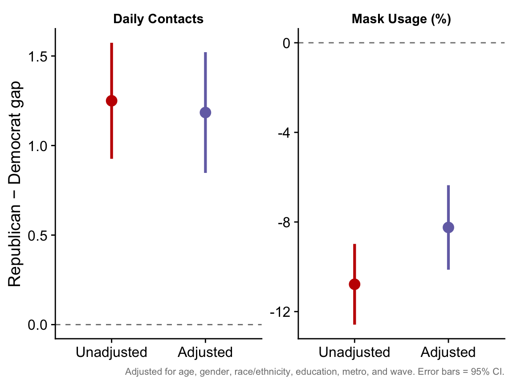
Test 2 — Urban/Rural Doesn’t Explain It
Theory predicts:
Urban/rural differences in density, risk, and local culture might account for partisan differences in behavior.
Verdict: Gaps persist within metro and non-metro areas. Urban Republicans still had more contacts and less mask use than urban Democrats.

Test 3 — Policy Doesn’t Explain It
Theory predicts:
If gaps reflect policy compliance, they should disappear within the same mandate environment — Democrats and Republicans under the same rules should behave the same.
Verdict: Gaps persist within all policy environments. Policy regime shifts absolute behavior levels but does not close the partisan divide.
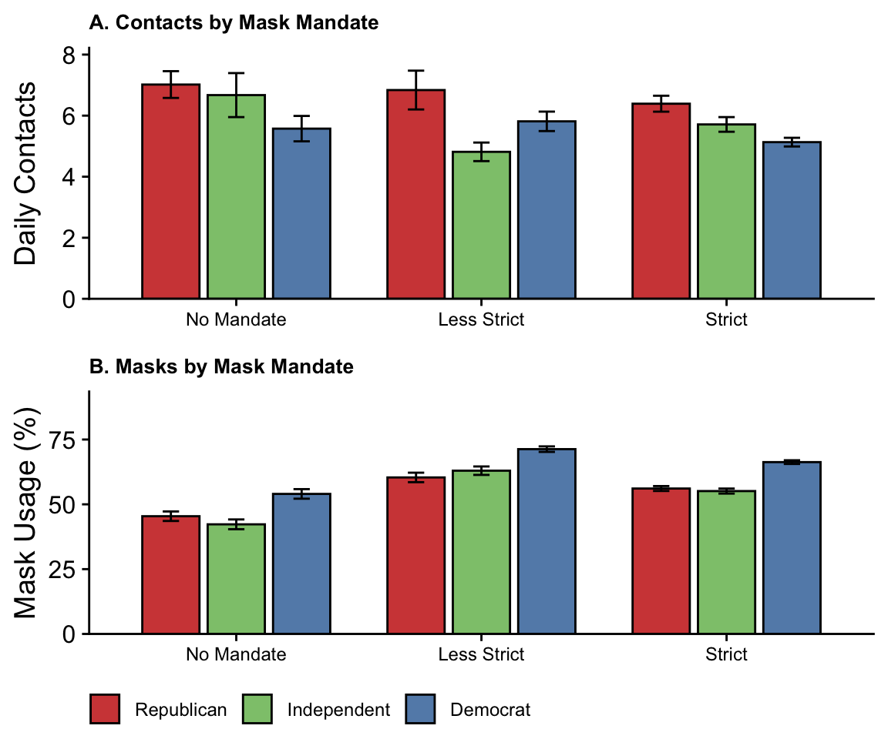
Test 4 — Severity Asymmetry: Contacts Compress, Masks Widen
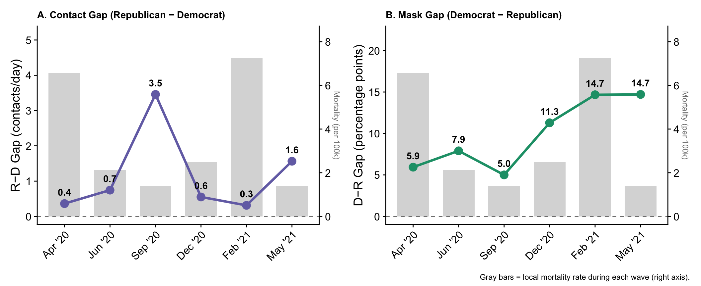
Theory predicts: If severity overrides partisanship, behavioral gaps should narrow or close during high-mortality periods.
Verdict: Contact gap compresses during mortality surges (Dec ’20, Feb ’21); mask gap widens regardless — the two behaviors follow different logics.
Test 5 — Stated Concern Doesn’t Account for It

Theory predicts: If Democrats are more careful because they’re more worried about COVID-19, controlling for risk perception should eliminate behavioral gaps.
Verdict: Gaps remain even among the equally concerned — and even among the unconcerned. Among the “very concerned,” Dems still masked at 72% vs. Reps at 72%.
Test 6 — Geography Doesn’t Explain It
Theory predicts:
If regional culture or local conditions drive differences, gaps should narrow or disappear within the same region.
Verdict: Gaps are present in every Census region. Where gaps are smaller (South), it’s because Democrats behave less cautiously — not because Republicans become more cautious.

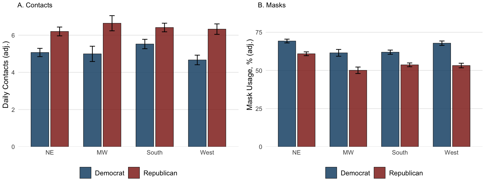
Test 7 — Local Partisan Context Doesn’t Explain It
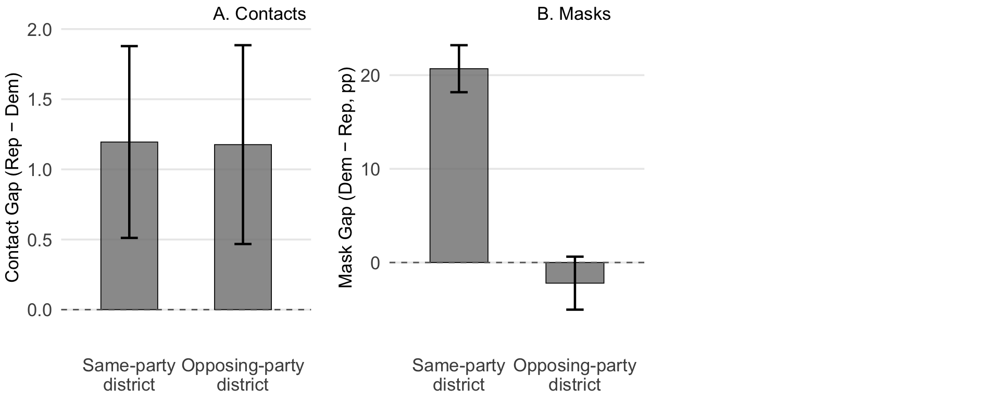
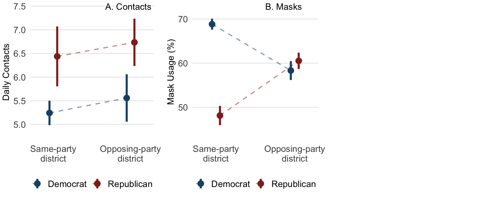
Theory predicts: Cross-cutting exposure should moderate gaps through social influence and norm exposure.
Verdict: Contact gap is stable; mask gap narrows in cross-cutting contexts — but both parties’ behavior shifts, not just one.
“Portable Polarization”
Partisan gaps in health behavior proved remarkably robust across every context we tested:
✓
Policy Environment
Persists within same mandate regime
Policy Environment
Persists within same mandate regime
✓
Geography
Persists in all 4 Census regions
Geography
Persists in all 4 Census regions
✓
Urban / Rural
Persists within metro and non-metro
Urban / Rural
Persists within metro and non-metro
✓
Local Partisan Context
Persists in opposing-party districts
Local Partisan Context
Persists in opposing-party districts
Partisan identity overrides local culture, policy environment, and geographic context — behavioral differences travel with the partisan.
The Visibility Mechanism
Private behavior tracked risk. Public behavior tracked group identity.
Private vs. Public Behavior
Social Contacts (private)
- Largely unobservable by political community
- Cannot easily signal partisan allegiance
- Gap narrowed when mortality surged
- Stakes were immediate, concrete, personal
→ Behavior tracked objective conditions
Mask-Wearing (public)
- Instantly legible social signal
- Visually communicates group membership
- Gap widened monotonically
- Meaning was politically activated
→ Behavior tracked group norms
If gaps were driven purely by risk perceptions or health lifestyles, both behaviors should diverge equally — they didn’t. The difference is social observability.
Key Takeaways
1. Partisan differences in health behaviors are real and large
Republicans had more daily contacts and significantly lower mask use than Democrats across all six waves — gaps larger than those observed for race, gender, or education.
2. Demographics don’t explain them away
Republicans are older, whiter, more male, and more rural — all of which independently predict riskier behavior. But controlling for all of these barely moves the needle. The partisan gap is not a demographic artifact.
3. Context matters, but doesn’t override partisan identity
The gap is smallest in the South and local partisan context does shift mask behavior — Democrats in Republican districts mask less, Republicans in Democratic districts mask more. But gaps persist in every region, every policy environment, and every urbanicity level. Local culture bends the baseline; it does not close the divide.
4. Severity shapes contacts more than masks — and more than stated concern
Contact gaps compress during mortality surges, suggesting Republicans do respond to objective conditions even when they say they are not concerned. But stated concern does not explain mask gaps — partisans at the same level of concern still behave differently. For masks, behavior tracks identity; for contacts, behavior tracks actual risk.
Implications
For theory, public health practice, and the sociology of health.
Theoretical Contributions
1. Partisan identity as a master status in health
- Extends Tajfel (identity → behavior) and Cockerham (collective forces structure health lifestyles) to partisanship
- Partisan gap in mask-wearing exceeded race, gender, education, and urbanicity
2. “Portable polarization” as a concept
- Behavioral differences are properties of individuals, not environments
- Gaps survive all contextual tests where alternatives predicted narrowing
3. The competing-theories framework
- Descriptive data can constrain causal explanations
- Testing where each theory predicts gaps should disappear is more informative than testing whether gaps exist
4. Visibility as a moderator of identity-driven health behavior
- Social observability determines whether identity processes activate
- Private vs. public behaviors diverge even within the same individuals
Limitations
1. We can rule out explanations, but can’t establish causation
BICS is repeated cross-sectional — we observe different people each wave, not the same people over time. We can show that gaps persist after controlling for demographics and context, but we can’t show that partisan identity itself caused the behavioral change. Longitudinal or experimental designs would be needed to establish direction.
2. We measure party ID, not Trump support
Republican vs. Democrat is a coarse proxy. I suspect that Trump support specifically — not party registration — is the stronger driver: the mask skepticism and contact patterns likely concentrate among strong Trump supporters, with traditional Republicans behaving differently. Party ID conflates these.
3. We lack religiosity
Religious affiliation and attendance are correlated with both Republican identity and with social contact patterns (in-person services, community gatherings). Without religiosity controls, we can’t rule out that some of the “partisan” gap is actually a religious community effect.
Implications for Public Health Communication
Even among respondents who say they are not at all concerned about COVID-19, Democrats masked more than Republicans who said the same — concern and behavior are decoupled along partisan lines
Stated concern is expressed in identity-consistent ways: it reflects what group members are supposed to say, not just their private risk assessment
Messaging designed to increase stated concern may change survey responses without changing behavior — if mask use is anchored to group norms rather than personal worry, raising concern does not necessarily move the lever that controls protective action
Implications for Disease Modeling
1. Partisan identity should be a model parameter
Standard compartmental models stratify by age, sex, and sometimes geography — but not political identity. Our findings suggest this is a meaningful omission. Republicans and Democrats have systematically different contact rates and mask compliance, and age stratification alone won’t solve it: partisan gaps persist within age groups. A model that ignores this heterogeneity will misestimate transmission dynamics in politically polarized populations.
2. Context modulates the parameter, even if it doesn’t eliminate it
Partisan identity doesn’t operate in a vacuum. Local mortality conditions, policy environment, and regional culture all shift the baseline level of behaviors — contacts compress during surges, mask rates rise under strict mandates. The partisan gap is portable, but the absolute behaviors it produces vary with context. Accurate modeling requires both: identity-stratified contact and compliance rates that are also sensitive to local contextual conditions.
Conclusion: Partisanship as a Structuring Force in Health
A. Contact gaps are context-sensitive
Republicans reduce contacts as mortality rises — consistent with genuine risk response. Reducing contact is a private act: it costs nothing tribally, so it yields to objective conditions.
B. Mask gaps follow the opposite logic
Polarization in mask-wearing widens as the pandemic worsens. Masking is a low-cost, visible signal — cheap to maintain as a tribal marker even under rising threat.
C. Context moves behavior — but not identity
Partisans surrounded by political opponents shift somewhat toward opposing norms. Yet gaps persist. Local context bends the baseline; it does not close the divide.
D. Partisan identity is an independent behavioral force
Robust to demographics, policy, geography, and stated concern — partisanship predicts behavior beyond what any contextual account can explain.
Thank You
Questions?
Paper: Portable Polarization: Partisan Differences in COVID-19 Health Behaviors
Data: Berkeley Interpersonal Contact Study (BICS) 6 waves, April 2020 – May 2021 N = 18,233
Key finding: Partisan gaps in health behaviors — social contacts and mask-wearing — persisted across every policy environment, geographic context, and demographic control we tested.
Key statistics:
- Mask gap: 10.8 pp (Dem vs. Rep)
- Contact gap: 1.2 more daily contacts (Rep)
- Gaps survived: policy, region, urban/rural, local partisanship, risk perception
Additional Slides
Mask Gap Among the “Very Concerned” Over Time
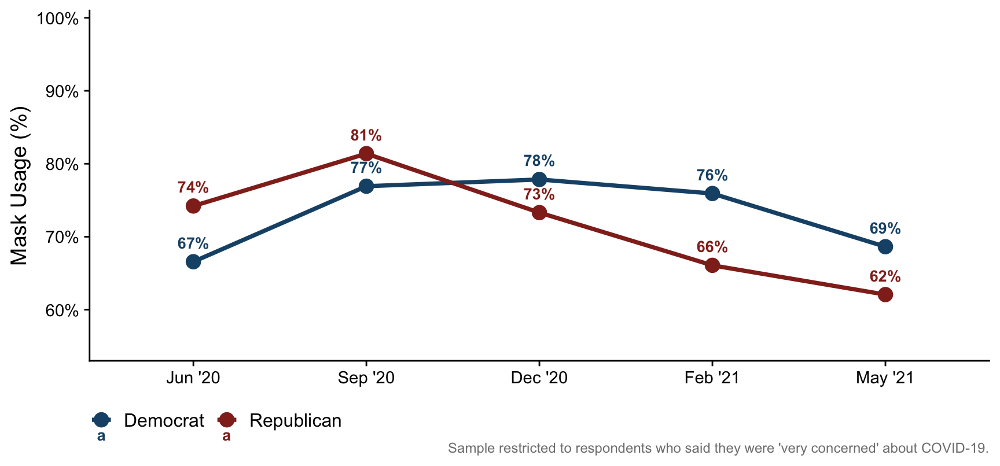
Behavior Levels by Census Region
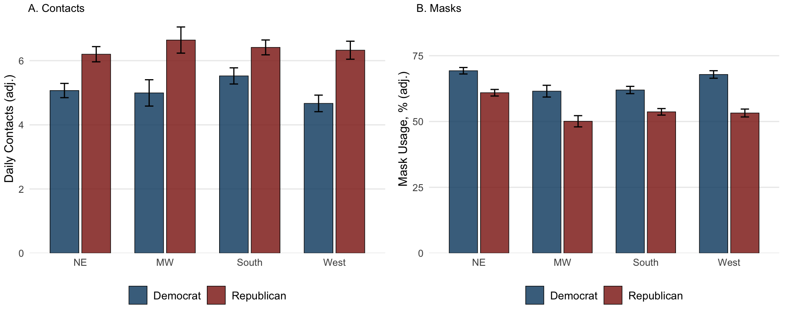